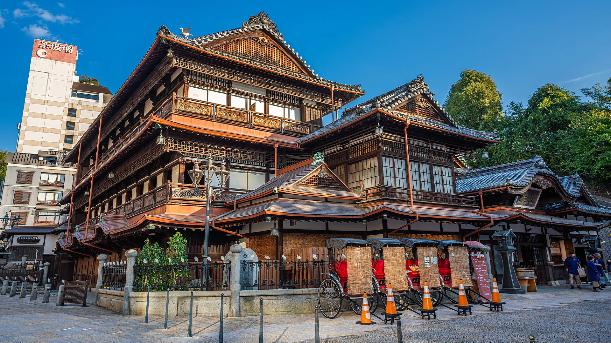
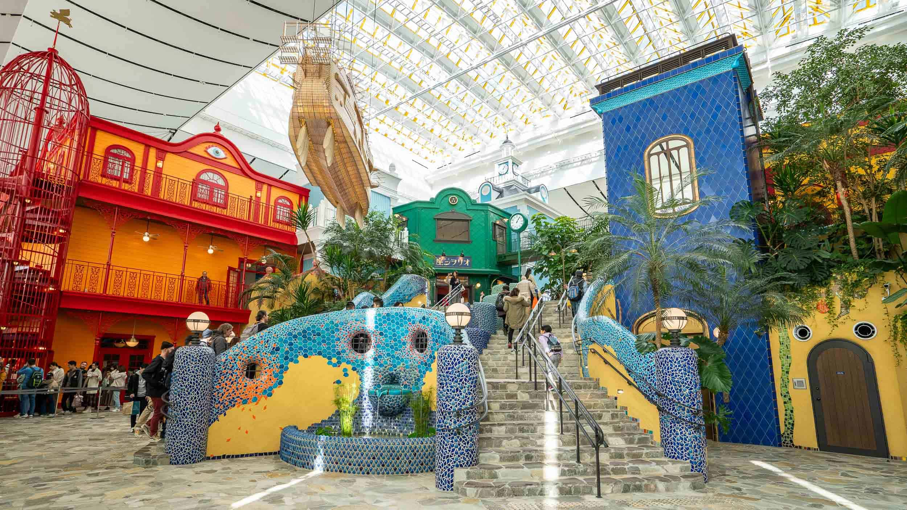

From mossy forests to steamy bathhouses, Studio Ghibli’s 23 films create landscapes that feel both fantastical and familiar, where soot sprites scuttle and cat-buses roam, blurring the line between nature and fantasy.
Yakushima: The sacred forests of Princess Mononoke
The 1997 classic Princess Mononoke drew inspiration from Yakushima, a Unesco-listed island off Kyushu known for its ancient cedar forests, mossy landscapes, and spiritual lore of kodama. With unique ecosystems spanning subtropical coasts to alpine peaks, Yakushima faces threats from climate change and overgrazing deer. Conservationists and local guides are working to protect its fragile, mystical environment for future generations.
Dōgo Onsen: The bathhouse of Spirited Away
A red bridge leads to a glowing bathhouse, home to Yubaba in Spirited Away. The setting was inspired by Dōgo Onsen Honkan in Matsuyama, Ehime Prefecture.

Today, Dōgo Onsen welcomes both bathers and Ghibli fans. After a major restoration project finished in 2024,
the bathhouse is once again open to the public and recognised as an Important Cultural Property of Japan. "We want to pass this place on to the next generation," Watanabe says.
"It's a treasure of Matsuyama, and we hope it will remain so for years to come."
Sayama Hills: The forest of Totoro
Studio Ghibli’s most iconic creation, Totoro—a round, gentle forest spirit—lives among camphor trees and rice fields in My Neighbor Totoro, inspired by real-life landscapes.
The Sayama Hills form a 3,500-hectare swath of satoyama (a mosaic of woods, farmland, rice paddies and wetlands) that stretches
across the borders of Tokyo and Saitama prefectures. Miyazaki lives nearby, and Studio Ghibli has acknowledged that these hills were
among the landscapes that inspired the film.
The Sayama Hills span 3,500 hectares of satoyama—woods, farmland, rice paddies, and wetlands—across Tokyo and Saitama. Miyazaki, who lives nearby, cited these hills as inspiration for My Neighbor Totoro. Today, much of “Totoro’s Forest” is protected by the Totoro no Furusato Foundation, featuring winding paths, streams, and views of Lake Sayama, where the landscape evokes scenes from the film and even reflects Mount Fuji on clear days.
The Ghibli Museum in Mitaka’s Inokashira Park showcases Studio Ghibli’s work, blending a children’s, technology, and fine arts museum. Highlights include a Catbus replica, café, bookstore, rooftop garden, and a theater for exclusive Ghibli short films.

Ghibli Park, opened November 1, 2022, in Nagakute, Aichi, Japan, features attractions inspired by Studio Ghibli films. The park is divided into five themed areas: Ghibli’s Grand Warehouse, The Hill of Youth, Dondoko Forest, Mononoke Village, and Valley of Witches.